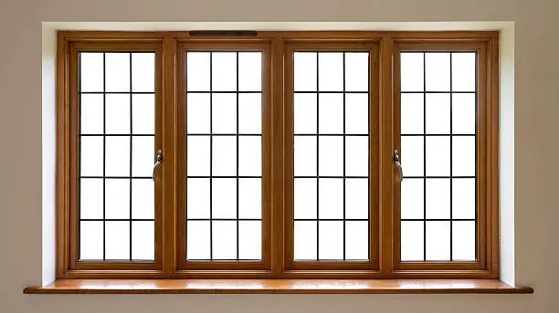

Painting Advice for
Cornwall Homeowners
Practical guidance from the team at Pinder's Painters — from beating Cornwall's coastal damp to choosing the right exterior paint for Atlantic weather.

All Articles

Winter Painting Tips: How to Avoid Damp, Mould and Peeling in Your Cornwall Home
Cornwall's Atlantic winters bring persistent moisture, salt air and condensation that make painting tricky. Here's how to tackle the season properly and get a finish that lasts.
Read article
The Complete Guide to Exterior Painting in Cornwall
Salt air, high winds, and regular rainfall mean Cornish exteriors take a real battering. Find out how often to repaint and which products hold up.
Read article
Spring Decorating: The Best Time to Refresh Your Cornwall Home
After a wet Cornish winter, spring is the ideal window to repaint inside and out. Here's why the timing matters and how to make the most of it.
Read article
How to Repaint Interior Window Frames: A Step-by-Step Guide
Tired-looking window frames can date a room instantly. This guide walks through the prep, priming, and painting techniques for a clean finish.
Read articleNeed a painter in Cornwall?
Found these articles useful? We do the actual work too. Get in touch for a no-fuss quote covering anywhere in Cornwall.